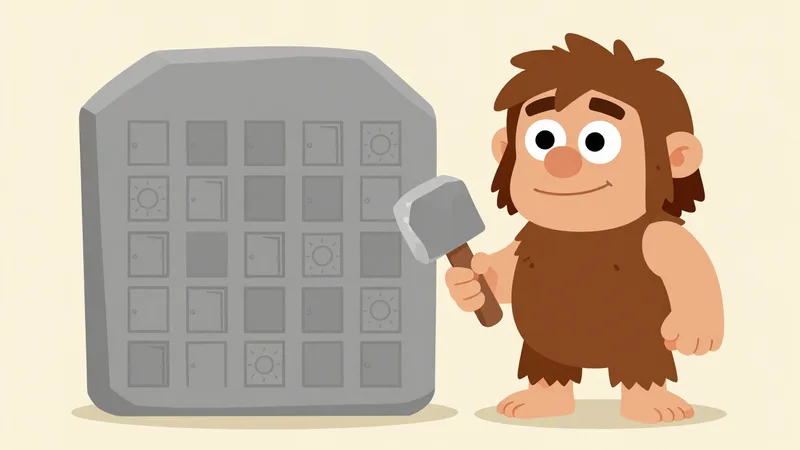
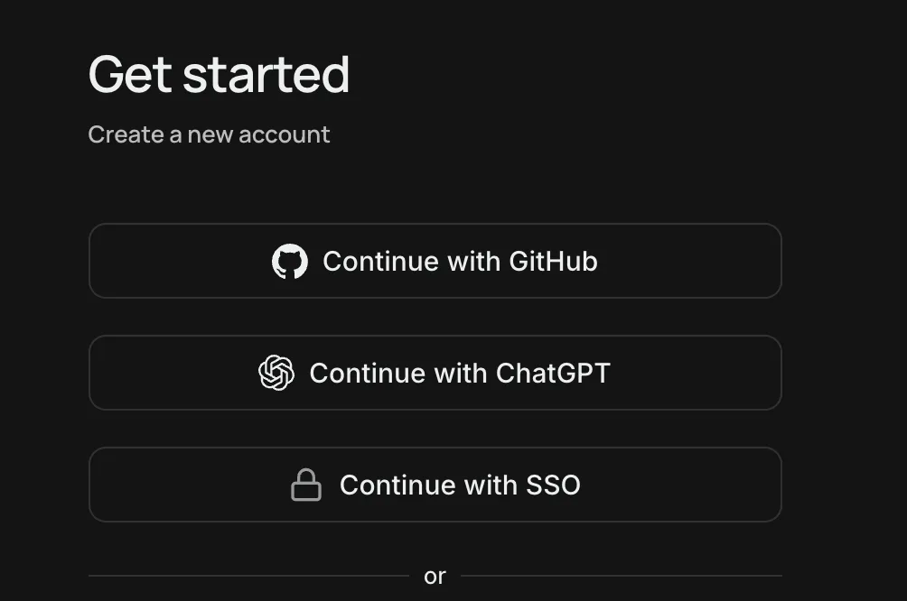
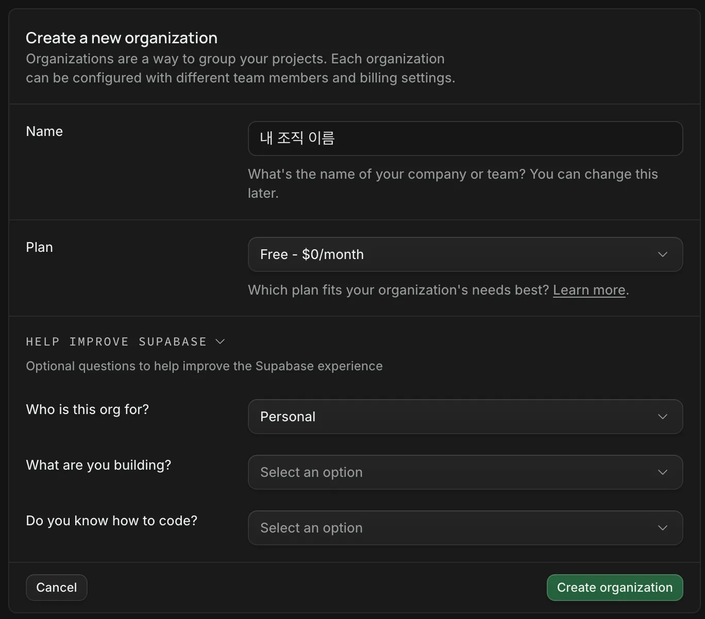
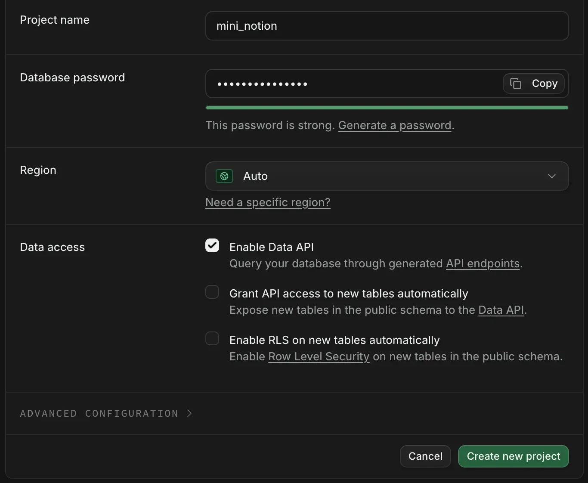
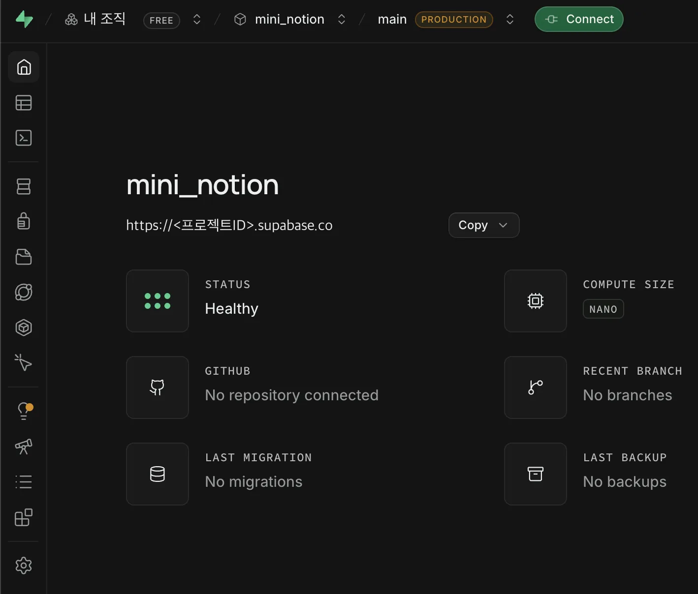
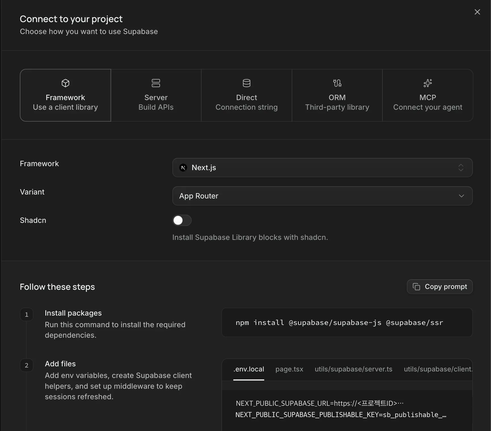
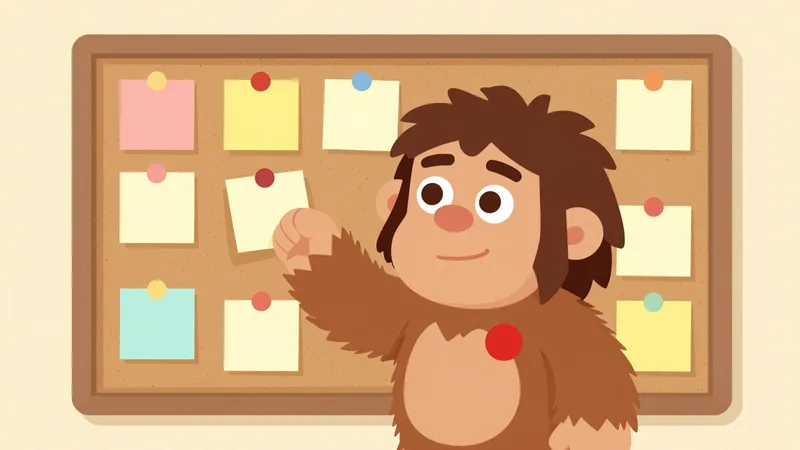
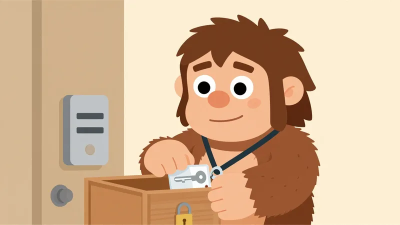

바이브코딩 심화
웹 앱의 데이터 흐름
2부 커리큘럼
웹 앱의 3요소
- 요청 보내기
- 받은 데이터로 화면 그리기
요청 받기누구인지 · 권한 확인DB 에 묻기 → 답 만들기- 요청마다 실행
- 키 · 규칙은 여기에만
| id | title |
|---|---|
| 41 | 주간 회의록 |
| 42 | 교육 자료 정리 |
- 표에 행으로 보관
- 서버만 직접 접근
HTTP
편지 비유
HTTP 메시지
GET /api/pages HTTP/1.1Host: mini-notion.vercel.appCookie: 로그인 세션 …Accept: application/json HTTP/1.1 200 OKContent-Type: application/json[{ "id": 41, "title": "주간 회의록", … }]HTTP 특징
HTTPS
http://Cookie: session=a8f3…
password: haneul1234https://x9#Qe7!vL2@pZ0$kT4…
%Rm8&wJ1^cN6*yB3…요청 방식과 상태 코드
API
GET/api/pagesPOST/api/pagesPATCH/api/pages/41DELETE/api/pages/41CRUD
POSTinsertGETselectPATCHupdateDELETEdelete조회 요청
Response[{ "id": 41, "title": "주간 회의록", … },
{ "id": 42, "title": "교육 자료 정리", … },
{ "id": 43, "title": "예산안 메모", … }]| id | title | status |
|---|---|---|
| 41 | 주간 회의록 | 작성 중 |
| 42 | 교육 자료 정리 | 초안 |
| 43 | 예산안 메모 | 작성 중 |
쓰기 요청
Response[{ "id": 44, "title": "고객사 미팅 회의록", … }]| id | title | status |
|---|---|---|
| 41 | 주간 회의록 | 작성 중 |
| 42 | 교육 자료 정리 | 초안 |
| 43 | 예산안 메모 | 작성 중 |
| 44 | 고객사 미팅 회의록 | 초안 |
수정 요청
Response[{ "id": 42, "status": "완료", … }]| id | title | status |
|---|---|---|
| 41 | 주간 회의록 | 작성 중 |
| 42 | 교육 자료 정리 | 초안완료 |
| 43 | 예산안 메모 | 작성 중 |
삭제 요청
Response(본문 없음 · 지웠다는 상태 코드만)
| id | title | status |
|---|---|---|
| 41 | 주간 회의록 | 작성 중 |
| 42 | 교육 자료 정리 | 초안 |
| 43 | 예산안 메모 | 작성 중 |
데이터베이스
데이터 기록의 변화
11/27 주간 회의록 — 김하늘
11/25 신규 입사자 교육 — 이준호
11/18 예산안 메모 — 박서연
- 기록
- 사람이 손으로 적음
- 보관
- 장부 · 화이트보드
- 쌓이는 방식
- 페이지가 늘어남 · 찾기 어려움
| A 제목 | B 날짜 | C 작성자 |
|---|---|---|
| 주간 회의록 | 11/27 | 김하늘 |
| 교육 자료 | 11/25 | 이준호 |
- 기록
- 사람이 PC 에 입력
- 보관
- 파일 · 메일로 사본 전달
- 쌓이는 방식
- 사본마다 내용이 갈림
| id | title | date | owner_id |
|---|---|---|---|
| 41 | 주간 회의록 | 2026-11-27 | 1 |
| 42 | 교육 자료 | 2026-11-25 | 2 |
| 43 | 새 행 | … | … |
- 기록
- 앱이 서버로 보냄
- 보관
- 회사 서버 한 곳
- 쌓이는 방식
- 한 표에 행이 추가 · 형식 검사
| id | title | date |
|---|---|---|
| 41 | 주간 회의록 | 2026-11-27 |
| 42 | 교육 자료 | 2026-11-25 |
- 기록
- 앱이 인터넷으로 보냄
- 보관
- Supabase 같은 서비스
- 쌓이는 방식
- 설치 없이 · 어디서나 같은 표
엑셀 표

페이지 표의 행과 열
| 제목 | 날짜 | 작성자 | 상태 | |
|---|---|---|---|---|
| 1 | 주간 회의록 | 2026-11-27 | 김하늘 | 초안 |
| 2 | 신규 입사자 교육 자료 | 2026-11-25 | 이준호 | 작성 중 |
| 3 | 내년 예산안 | 2026-11-18 | 박서연 | 작성 중 |
| 4 | 10월 실적 보고 | 2026-11-14 | 최민재 | 완료 |
엑셀과 데이터베이스
| 제목 | 날짜 · date 형식 | 작성자 |
|---|---|---|
| 주간 회의록 | 2026-11-27 | 김하늘 |
| 신규 입사자 교육 자료 | 2026-11-25 | 이준호 |
블로그 표 나누기
| 글 제목 | 글쓴이 | 글쓴이 이메일 | 댓글 | 댓글 쓴 사람 | 댓글 쓴 사람 이메일 |
|---|---|---|---|---|---|
| 첫 바이브코딩 후기 | 김하늘 | haneul@a.comhaneul@new.com | 잘 읽었어요 | 이준호 | junho@a.com |
| 첫 바이브코딩 후기 | 김하늘 | haneul@a.com | 저도 해 볼게요 | 박서연 | seoyeon@a.com |
| Supabase 써 보기 | 이준호 | junho@a.com | 좋은 정리 | 김하늘 | haneul@a.com |
| MCP 정리 | 김하늘 | haneul@a.com |
| id | name |
|---|---|
| 1 | 김하늘 |
| 2 | 이준호 |
| 3 | 박서연 |
| id | title | author_id |
|---|---|---|
| 1 | 첫 바이브코딩 후기 | 1 |
| 2 | Supabase 써 보기 | 2 |
| 3 | MCP 정리 | 1 |
| id | post_id | user_id | body |
|---|---|---|---|
| 1 | 1 | 2 | 잘 읽었어요 |
| 2 | 1 | 3 | 저도 해 볼게요 |
| 3 | 2 | 1 | 좋은 정리 |
표와 표의 관계
| id | owner_id | title | date |
|---|---|---|---|
| 1 | 1 | 주간 회의록 | 2026-11-27 |
| 2 | 2 | 신규 입사자 교육 자료 | 2026-11-25 |
| 3 | 1 | 고객 설문 결과 | 2026-11-19 |
| id | name | |
|---|---|---|
| 1 | 김하늘 | haneul@company.com |
| 2 | 이준호 | junho@company.com |
| 3 | 박서연 | seoyeon@company.com |
SQL 작성의 변화
작성 중 ✓
완료
초안
- 사람이 하는 일
- 줄마다 눈으로 찾음
- AI 가 하는 일
- —
select title, date from pages where status = '작성 중' order by date;
- 사람이 하는 일
- 문법 학습 · 작성 · 실행
- AI 가 하는 일
- —
작성 중인 페이지만 보여 줘
Supabase MCP · SQL 작성 → 실행작성 중 2개 · 내년 예산안 · 신규 입사자 교육 자료
- 사람이 하는 일
- 요청 · 결과 확인
- AI 가 하는 일
- SQL 작성 · 실행 · 보고
Supabase
Supabase 무료 플랜
Supabase 가입 · 첫 표
Supabase 프로젝트를 만들고 pages 표에 행을 직접 넣어 본다
- supabase.com 가입 · Continue with GitHub
- 조직 만들기 · Free
- 새 프로젝트 · mini_notion · DB 비밀번호
- Table Editor 에서 pages 표 · 행 2개
- date 칸에 「월말쯤」 넣어 보기
- 대시보드에 mini_notion 프로젝트
- pages 표에 행 2개
- 날짜 칸이 형식 안 맞는 값을 거절
실습 2-2 · 1단계 가입

실습 2-2 · 1단계 GitHub 승인
Authorize Supabase
wants to access your 내 GitHub 계정 account
실습 2-2 · 2단계 조직 만들기

실습 2-2 · 3단계 새 프로젝트

실습 2-2 · 4단계 프로젝트 화면

실습 2-2 · 5단계 pages 표
실습 2-2 · 6단계 행 넣기
기획 · 요구사항
기본 흐름
2부 주제 예시
주제 고르기 기준
실습 주제 · 미니 노션 v2
기획서 v2 변경 사항
기획자 페르소나 대화 예
/plan 기획자.md 페르소나로 미니 노션 시작 버전을 팀이 같이 쓰게 키우는 기획서 v2 를 쓰자
지금 버전에서 팀원이 실제로 겪은 문제는 무엇인가요?
내가 추가한 페이지가 팀원 휴대폰에서는 안 보여
페이지를 완료로 옮기거나 지울 수 있는 사람은 누구여야 하나요?
그 페이지의 작성자만
개발 계획 v2 추가 항목
개발 계획 v2 추가 항목 예시
| 표 | 열 | 예 |
|---|---|---|
| members | id · name · email | (로그인 계정) · 김하늘 · haneul@company.com |
| pages | id · title · owner_id · date · status · content · created_at | 41 · 주간 회의록 · (김하늘) · 2026-12-04 · 작성 중 · (블록) · 자동 |
| 대상 | 쓰는 곳 | 키 보관 |
|---|---|---|
| Supabase DB · 로그인 | 페이지 저장 · 로그인 | .env · Vercel 환경변수 |
| 공휴일 API · 특일 정보 | 날짜 공휴일 확인 | HOLIDAY_API_KEY · 서버만 |
| Supabase MCP (개발 중) | 표 만들기 · 조회 | 개발자 로그인 |
| Google Calendar (개발 중) | 일정 → 회의록 · 읽기 | claude.ai 계정 |
| 미니 노션 MCP 서버 | Claude · ChatGPT 에서 페이지 | 로그인 (OAuth) |
| 누가 | 목록 보기 | 새 페이지 | 수정 · 삭제 |
|---|---|---|---|
| 로그인 전 | ○ | ✕ | ✕ |
| 로그인한 팀원 | ○ | ○ | 내가 작성자인 페이지만 |
확인 가능한 완료 기준 v2
「보안이 된다」
「다른 사람이 작성자인 페이지에는 삭제 버튼이 없다」
Claude Code로 개발 계획 v2 세우기
기획서 v2 · 개발 계획 v2
내 1부 앱 → 기획서 v2 · 개발 계획 v2 · 데이터 구조 · 연동 대상 · 권한
- 1부 프로젝트 폴더를 VS Code로 열기
- 기획자 페르소나로 기획서 v2
- 개발자 페르소나로 개발 계획 v2
- 데이터 구조 · 연동 대상 · 권한 · 완료 기준 확인
- 개발계획.md 에 데이터 구조 · 연동 대상 · 권한이 적힘
- 공유 · 권한 · 외부 연동 완료 기준 각 1개 이상
실습 2-3 순서
- 11부 폴더 열기
- 2기획자 페르소나 · 기획서 v2
- 3개발자 페르소나 · 개발 계획 v2 요청
- 4Claude 질문에 답하기
- 5승인 → 개발계획.md 확인
- 개발계획.md 에 데이터 구조 · 연동 대상 · 권한이 생김
- 권한 표에 「내가 작성자인 페이지만」 같은 줄
실습 2-3 요청 항목
실습 2-3 확인
데이터 다루기
미니 노션 데이터 구조
| id | name | |
|---|---|---|
| 하늘 | 김하늘 | haneul@… |
| 준호 | 이준호 | junho@… |
| 서연 | 박서연 | seoyeon@… |
| id | title | owner_id | date | status |
|---|---|---|---|---|
| 7 | 주간 회의록 | 하늘 | 12-04 | 초안 |
| 8 | 입사자 교육 자료 | 준호 | 11-25 | 작성 중 |
| 9 | 고객 설문 결과 | 하늘 | 11-19 | 완료 |
AI와 데이터 구조 설계
개발계획.md 의 데이터 구조를 보고 Supabase 에 어떤 표를 만들지 정리해 줘. 만들기 전에 표 모양부터 보여 줘
제안 · members · pages 두 표. 상태는 초안 · 작성 중 · 완료 셋만 받게 DB 에서도 막을까요?
응 · 화면과 DB 둘 다에서 막아 줘
마이그레이션 파일 supabase/migrations/…_create_pages.sql 작성 · supabase db push 로 반영할까요?
마이그레이션
Supabase 연결 순서
Connect 화면

Supabase 키 두 종류
Supabase Auth 로그인
로그인만으로는 부족한 이유
팀 게시판 비유

RLS 동작
| id | title · 작성자 |
|---|---|
| 7 | 주간 회의록 · A |
| 8 | 교육 자료 정리 · B |
계정 두 개로 권한 확인
Supabase 저장 · 로그인 · 권한
내 앱 → 모두 같은 페이지 목록 · 로그인 · 내 페이지만 수정
- 2-2 의 Supabase 프로젝트 열기
- 표 설계 → 마이그레이션 · db push
- 저장 위치 교체 요청
- 로그인 · RLS 요청
- 계정 두 개로 확인
- 다른 기기에서 같은 페이지가 보임
- 다른 계정 작성 페이지는 삭제 불가
실습 2-4 순서
- 1Supabase CLI 연결
- 2표 설계 → 마이그레이션
- 3저장 · 조회를 DB 로 교체
- 4로그인 · RLS
- 5두 계정 확인
- Table Editor 에 페이지 행이 생김
- 계정 B 로 계정 A 페이지 삭제 불가
실습 2-4 요청 항목
실습 2-4 확인
외부 API · 키
앱이 모르는 정보
API 키
HOLIDAY_API_KEY=a1b2c3d4e5f6...출입증 비유

키를 두는 곳
push 와 .env
.env공휴일 API 발급
공휴일 API 요청 · 응답
SpcdeInfoService · 공휴일 정보 조회→한국천문연구원 특일 정보 · 공휴일solYear=2026 · solMonth=12→보낼 값 · 연 · 월ServiceKey=…→인증키 · .env 의 값locdate 20261225→받는 값 · 날짜dateName 기독탄신일→공휴일 이름isHoliday Y→공공기관 휴일 여부키 노출 경로
Next.js 서버의 키 보호
공휴일 차단 대화 예시
날짜가 공휴일이면 저장을 막아 줘. 공휴일은 공공데이터포털 특일 정보 API 에서 받고, 키는 Next.js 서버에서만 읽게 해 줘
계획 · app/api/holidays/route.ts 생성 → 추가 창에서 호출. 경고 문구는 「공휴일 · 기독탄신일」 형식으로 할까요?
응
완료 · 날짜 2026-12-25 선택 → 공휴일 경고 · 저장 막힘
공휴일 반영 전후
연휴가 끝난 뒤에야 알아챔
저장 막힘 · 다른 날 고르기
공휴일 API · 키 보관
내 앱 → 공휴일 차단 · 키는 서버에만
- 공공데이터포털 인증키 발급
- .env · .gitignore 요청
- Next.js 서버 · 공휴일 차단 요청
- Network 탭에서 키 확인
- 날짜 12월 25일 저장 막힘
- git status · GitHub 에 키 없음
실습 2-5 순서
- 1인증키 발급
- 2.env · .gitignore
- 3Next.js 서버 · 공휴일 차단
- 4Network 탭 확인
- 날짜가 공휴일이면 경고 · 저장 막힘
- .env 가 git status 에 없음
실습 2-5 요청 항목
실습 2-5 확인
MCP
대화창 밖의 데이터
회사마다 따로 만든 연결
연결 수가 늘어나는 문제
USB-C 포트

MCP 구조
MCP 동작
| title | date |
|---|---|
| 예산안 메모 | 11/18 |
| 설문 결과 | 11/19 |
| 보고서 | 12/04 |
API와 MCP
쓸 만한 MCP
MCP 연결 방법
claude mcp add --transport http supabase \
"https://mcp.supabase.com/mcp?project_ref=<프로젝트 ID>&read_only=true"MCP 안전 설정
캘린더 일정 → 회의록 페이지
| 페이지 | 날짜 | 상태 |
|---|---|---|
| 주간 회의록 | 11/27 | 작성 중 |
| 교육 자료 정리 | 11/25 | 초안 |
| 주간 회의 회의록캘린더 | 11/30 | 초안 |
| 고객사 미팅 회의록캘린더 | 12/2 | 초안 |
| 보고서 마감 회의록캘린더 | 12/4 | 초안 |
MCP 연결 · 캘린더 → 페이지
Claude Code 에 MCP 를 붙여 캘린더 일정을 미니 노션 페이지로 옮긴다
- claude.ai 에서 Google Calendar 커넥터 켜기
- Supabase MCP 연결 · 로그인
- /mcp 로 두 서버 확인
- 이번 주 일정 → 페이지 요청
- 미니 노션 화면에서 확인
- /mcp 에 두 서버 연결됨
- 캘린더 일정 수만큼 새 페이지
- 일정 날짜 = 페이지 날짜
실습 2-6 순서
- 1Google Calendar 커넥터
- 2Supabase MCP 연결
- 3/mcp 확인
- 4일정 → 페이지 요청
- 5페이지 목록 확인
- 페이지 목록에 캘린더 일정 수만큼 새 페이지
- 날짜가 일정 날짜와 같음
실습 2-6 요청 항목
실습 2-6 확인
MCP 서버 만들기
미니 노션 MCP 서버
도구 설계
MCP 서버 동작
| 페이지 | 날짜 | 상태 |
|---|---|---|
| 주간 회의록 | 11/27 | 작성 중 |
| 교육 자료 정리 | 11/25 | 초안 |
| 회의록 초안 | 11/29 | 초안 |
만드는 순서
MCP Inspector
npx @modelcontextprotocol/inspector@latest \
--server-url http://localhost:3000/api/mcp --transport httpClaude Code에 연결
claude mcp add --transport http mini-notion http://localhost:3000/api/mcp인증
배포
미니 노션 MCP 서버
새 페이지 · 조회 도구를 가진 MCP 서버를 만들어 배포한다
- 개발 계획에 도구 목록 추가
- MCP 서버 만들기 요청
- Inspector 로 도구 확인
- Claude Code 에 localhost 연결 · 시험
- push · 배포 주소 확인
- Inspector 에 도구 4개
- Claude Code 요청으로 페이지 목록에 새 페이지
- 배포 주소 /api/mcp 응답
실습 2-7 순서
- 1도구 목록
- 2서버 만들기
- 3Inspector
- 4Claude Code 연결
- 5배포
- Inspector 에서 add_page 실행 → 페이지 목록에 새 행
- /mcp 에 mini-notion 연결
실습 2-7 요청 항목
실습 2-7 확인
MCP 서버 등록 · 활용
MCP 서버 등록 위치
원격 MCP 주소 조건
Claude에서 페이지 만들기
| 페이지 | 날짜 | 상태 |
|---|---|---|
| 주간 회의록 | 11/27 | 작성 중 |
| 회의록 초안 | 11/29 | 초안 |
| 고객 제안서 | 12/04 | 초안 |
ChatGPT에서 조회
| 페이지 | 날짜 | 상태 |
|---|---|---|
| 주간 회의록 | 11/27 | 작성 중 |
| 회의록 초안 | 11/29 | 초안 |
| 고객 제안서 | 12/04 | 초안 |
캘린더와 함께 일정 관리
이번 주 캘린더 일정이랑 내 페이지 마감이 겹치는 날 알려 주고, 겹치는 페이지는 다음 날로 미뤄 줘
Google Calendar · 12/2 (수) 고객사 미팅
mini-notion · list_by_date → 12/2 마감 「교육 자료 정리」
겹치는 날 1일 · 「교육 자료 정리」 날짜를 12/3 으로 바꿀까요?
응
mini-notion · update_page → 날짜 12/3 · 완료
쓰기 확인 · 점검
Claude · ChatGPT 에서 페이지 만들기
배포한 미니 노션 MCP 서버를 AI 앱에 등록해 대화로 페이지를 넣고 본다
- Claude 웹에 custom connector 추가 · 로그인
- 대화로 페이지 등록
- 페이지 목록에서 확인
- ChatGPT 등록 (요금제가 되면)
- 이번 주 마감 조회
- 대화로 넣은 페이지가 페이지 목록에 보임
- 다른 AI 앱에서 같은 페이지 조회
실습 2-8 순서
- 1커넥터 추가
- 2로그인
- 3페이지 등록
- 4페이지 목록 확인
- 5다른 앱에서 조회
- 페이지 목록에 새 페이지
- 다른 앱 조회 결과에 같은 페이지
실습 2-8 요청 항목
실습 2-8 확인
품질 · 운영
소프트웨어 개발 생명주기 (SDLC)
직접 클릭 확인의 한계
출고 전 검수 비유

예제 앱 기준 테스트
테스트 종류
테스트 실행 결과 예
AI 에게 테스트 맡기기
개발 계획 완료 기준으로 테스트를 만들고 실행해 줘. 실패하면 고치기 전에 원인부터 알려 줘
테스트 6개 작성 · 5개 통과 · 1개 실패.
날짜가 오늘인 페이지가 「마감 지남」으로 표시됨 — 날짜 비교에 「<=」 사용. 고칠까요?
응. 고친 뒤 테스트 전체 다시 실행해 줘
수정 · 테스트 6개 모두 통과
화면 테스트 요청 예
브라우저를 열어서 개발 계획 완료 기준을 하나씩 눌러 확인해 줘
localhost:3000 열기 → 로그인
주간 회의록 추가 ○
날짜 어제인 페이지 → 「마감 지남」 ○
날짜 12-25 → 「공휴일」 · 저장 막힘 ○
다른 사람 페이지 → 삭제 버튼 없음 ○
콘솔 에러 0건
에러 메시지 읽는 법
TypeError→종류 · 값의 종류가 맞지 않음Cannot read properties of undefined→내용 · 비어 있는 값(undefined)을 읽으려 함(reading 'filter')→읽으려던 것 · filterat render (app.js 3번째 줄)→위치 · app.js 3번째 줄 · render 함수디버깅 흐름
버그 전달 방법
콘솔: new row violates row-level security policy」
AI 코드 리뷰
보안 기본 점검
배포 뒤 오류 원인
Vercel 환경변수 등록
모니터링
가게 운영 비유

Vercel 로그
로그 남기기
공휴일 API 호출이 실패하면 원인을 Vercel 로그에 남겨 줘. 키 값은 로그에 쓰지 마
app/api/holidays/route.ts 실패 지점에 console.error 추가
· 상태 코드 · 실패한 날짜만 기록 · 키는 기록 안 함
Web Analytics
문제 대응 흐름
공휴일 표시 실패 대응
배포 주소에서 공휴일이 안 보여. Vercel 로그:
GET /api/holidays 500 · Error: HOLIDAY_API_KEY is not set
코드 문제 아님 · Vercel 환경변수에 HOLIDAY_API_KEY 없음.
Settings → Environment Variables 에 Secret 으로 등록 → Redeploy
등록하고 Redeploy 했어
로그 확인 · GET /api/holidays 200 · 12-25 「공휴일」 표시
테스트 · 운영
완료 기준을 테스트로 만들고, 배포 주소의 로그로 MCP 호출까지 확인
- 완료 기준으로 테스트 요청 · 실행
- 실패 원인 확인 → 수정
- /code-review · /security-review
- Vercel 환경변수 · Redeploy
- Logs 에서 /api/mcp 호출 확인
- 테스트 전부 통과
- 배포 주소에서 2부 기능 동작
- Logs 에 MCP 호출 줄
실습 2-9 순서
- 1테스트 요청 · 실행
- 2수정 승인
- 3리뷰 · 보안 점검
- 4환경변수 · Redeploy
- 5로그 확인
- not ok 0개
- Logs 에 5xx 없음
- POST /api/mcp 200
실습 2-9 요청 항목
마무리
2부 회고
시작 버전 → 2부 앱
결과 공유
미니 노션 v2 · https://mini-notion.vercel.app
로그인 · 팀원 모두 같은 페이지 목록 · 공휴일 날짜 차단 · Claude · ChatGPT 에서 페이지 등록
테스트 8개 통과 · 가장 오래 걸린 곳: 권한(RLS) 설정운영 체크리스트
회고 기록
| 질문 | 내 답 |
|---|---|
| 테스트 통과 | 개 중 개 |
| 데이터 구조에서 바뀐 것 | |
| 테스트 · 점검이 잡아낸 버그 | |
| 배포 뒤 로그에서 본 에러 | |
| 3부에서 맡기고 싶은 반복 업무 |